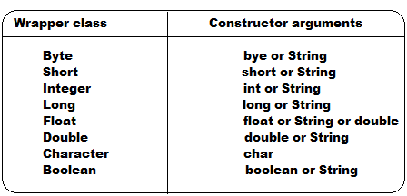
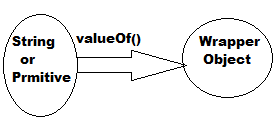
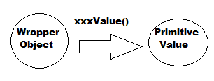
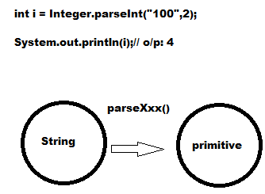
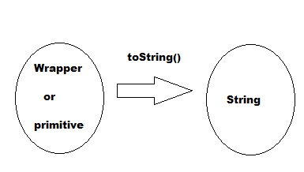
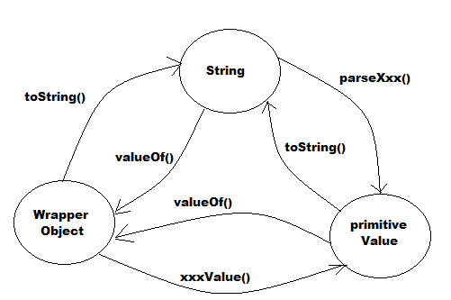
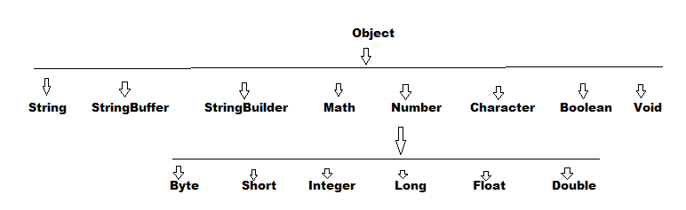

Wrapper Class
- The main objectives of Wrapper classes are :
- To wrap primitives into Object from . So that we can handle primitives also just like Objects .
- To define several utility methods which are required for primitives .
Constructors :
- Almost all Wrapper classes defines 2 constructors. One can take corresponding primitive and the others can take String argument .
- If the String argument is not representing number then we will get RuntimeException: NumberFormatException :
Example: Integer i = new Integer("ten"); // NumberFormatException
- Float class contains 3 constructors with float, double and String arguments .
Example: Float f = new Float(10.5f);
Float f = new Float("10.5f");
Float f = new Float(10.5);
Float f = new Float("10.5");
- Character class contains only one constructors with char primitive as arguments .
Character ch = new Character('a');
Character ch = new Character("a");// Compiletime Error
- Boolean class contains 2 constructors with boolean primitives and String arguments .
- If we pass boolean primitives as argument then allowed values are true and false (where case should be in lower case )
- If we pass String argument then content and case both are not important .
- If the content is case insensitive String of "true" then it is treated as true . In all other cases it is treated as false .

- Note : In all Wrapper classes, toString() method is overridden for return its content .
- In all wrapper classes, .equals(_) method is overridden for content comparison .
Utility Methods :
- valueOf()
- xxxVlaue()
- parseXxx()
- toString()
valueOf()
- We can use valueOf() methods to create wrapper Object for the given String or primitive .
- Form 1: Every wrapper class except character class contains the following valueOf() method to create wrapper object for the given String .
public static wrapper valueOf(String s);
- Form 2: Every Integral type wrapper class (Byte, Short, Integer, Long) contain the following valueOf() method to create Wrapper object for the given specified radix String .
public static wrapper valueOf(String s, int radix);
The allowed range of radix is 2 to 36
Example: Integer I = Integer.valueOf("111",2);
System.out.println(I);// o/p: 7
- Form 3: Every Wrapper class including Character class defines the following valueOf() method to create Wrapper Object for the given primitive .
Integer I = Integer.valueOf(10);
Character ch = Character.valueOf('a');
Boolean b = Boolean.valueOf(true);

xxxValue():
- We can use xxxVlaue() method to find primitive values for the given Wrapper object .
- Every number type Wrapper class (Byte,Short,Integer,Long,Float,Double) contains the following xxxValue() method to find primitive for the given wrapper object .
- Character class contains charValue() method to final char primitive for the given Character object .
Example : Character ch = new Character('a');
char c = ch.charValue();
System.out.println(c);// o/p: 'a'
- Boolean class contains booleanValue() method to find boolean primitive for the given Boolean object .
Example: Boolean B = Boolean.valueOf("Heera");
boolean b = B.booleanValue();
System.out.println(b); // o/p: false

parseXxx():
- We can use parseXxx() method to convert String to primitive .
- Form 1: Every wrapper class except Character class contains the following parseXxx() method to convert String to primitive .
public static primitive parseXxx(String s);
Example: int i = Integer.parseInt("10");
double d = Double.parseDouble("10.5");
boolean b = Boolean.parseBoolean("true");
- Form 2: Every Integral type wrapper class contains the following parseXxx() method to convert specified radix String to primitive .
public static primitive parseXxx(String s, int radix);
Note : The allowed range of radix is 2 to 36 .

toString():
- We can use toString() method to convert wrapper Object and primitives to String .
- Form 1: Every wrapper class contains the following toString() method to convert wrapper object to String .
public String toString();
- It is the overriding version Object class toString() method .
- Whenever we are trying to print any wrapper object reference internally this method will be called .
Example: Integer I = new Integer(10);
System.out.printl(I);// Internally called I.toString(); // O/P: 10
String s = I.toString();
System.out.println(s);// o/p: s
- Form 2: Every wrapper class including Character class contains the following static toString() method to convert primitive to String .
public static String toString(primitive p);
Example: String s = Integer.toString(10);
String s = Boolean.toString(true);
String s = Character.toString('a');
- Form 3: Integer and Long classes contain the following toString() method to convert primitive to specified radix String form .
public static String toString(primitive p, int radix);
Example : String s = Integer.toString(7,2);
System.out.println(s);// o/p: 111
toXxxString():-
- Integer and Long classes contain the following toXxxString() methods .
public static String toBinaryString(primitive p);
public static String toOctalString(primitive p);
public static String toHexString(primitive p);
Example 1 : String s = Integer.toBinaryString(10);
System.out.println(s); // o/p: 1010
Example 2: String s = Integer.toOctalString(10);
System.out.println(s);// o/p : 12
Example 3: String s = Integer.toHexString(10);
System.out.println(s);// o/p: a

The flow between Wrapper object, primitive and String

Partial hierarchy of java.lang.package :-

- The wrapper classes which are not child class of Number are Character and Boolean .
- Wrapper classes which are not direct child class of Object are Byte, Short, Integer, Long, Float and Double .
- In addition to String, all wrapper objects are immutable .
- All wrapper classes, String, StringBuffer and StringBuilder are final classes .
Void class:-
- Sometimes we may consider Void class also Wrapper class .
- It is the direct Child class of Object and it is the final class .
- It does not contain any methods and it contains only one variable TYPE .
public static final java.lang.class TYPE;
- We can use Void class in Reflections API to check whether return type of method is void or not .
Example : if(ob.getClass().getMethod("m1").getRunType()==Void.TYPE)
{ }